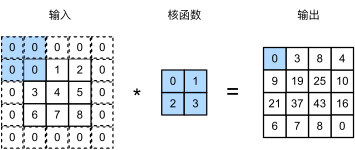
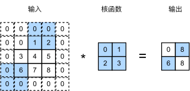
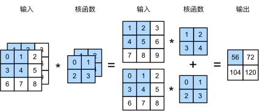
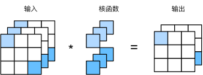
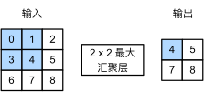

本文FROM《动手学深度学习》第六章 卷积神经网络 6.3、6.4和6.5小节
虽然标题中，填充、步幅、通道、池化放在一起，但是实际这四者并非并列关系。
填充
在卷积神经网络中，卷积的输出形状取决于输入形状和卷积核的形状。
例如，一个 240×240 像素的图像，经过 10 层 5×5 的卷积后，将减少到 200×200 像素。如此一来，原始图像的边界丢失了许多有用信息。而填充是解决此问题最有效的方法。
下面的图展示了带填充的二维互相关。

设网络输入宽高分别为 $n_w$ 和 $n_h$，卷积核宽高分别为 $k_w$ 和 $k_h$，如果我们添加 $p_h$ 行填充（大约一半在顶部，一半在底部）和 $p_w$ 列填充（左侧大约一半，右侧一半），则输出形状将为
这意味着输出的高度和宽度将分别增加 $p_h$ 和 $p_w$。
在许多情况下，我们需要设置 $p_h=k_h-1$ 和 $p_w=k_w-1$，使输入和输出具有相同的高度和宽度。这样可以在构建网络时更容易地预测每个图层的输出形状。假设 $k_h$ 是奇数，我们将在高度的两侧填充 $p_h/2$ 行。
如果 $k_h$ 是偶数，则一种可能性是在输入顶部填充 $\lceil p_h/2\rceil$ 行，在底部填充 $\lfloor p_h/2\rfloor$ 行。填充宽度的两侧同理。
卷积神经网络中卷积核的高度和宽度通常为奇数，例如 1、3、5 或 7。选择奇数的好处是，保持空间维度的同时，我们可以在顶部和底部填充相同数量的行，在左侧和右侧填充相同数量的列。
此外，使用奇数核和填充也提供了书写上的便利。对于任何二维张量 $X$，当满足：
- 内核的大小是奇数；
- 所有边的填充行数和列数相同；
- 输出与输入具有相同高度和宽度
则可以得出：输出 $Y[i, j]$ 是通过以输入 $X[i, j]$ 为中心，与卷积核进行互相关计算得到的。比如，在下面的例子中，我们创建一个高度和宽度为3的二维卷积层，并在所有侧边填充1个像素。给定高度和宽度为8的输入，则输出的高度和宽度也是8。
import torch |
# 为了方便起见，我们定义了一个计算卷积层的函数。 |
torch.Size([8, 8])
当卷积核的高度和宽度不同时，我们可以填充不同的高度和宽度，使输出和输入具有相同的高度和宽度。在如下示例中，我们使用高度为5，宽度为3的卷积核，高度和宽度两边的填充分别为2和1。
conv2d = nn.Conv2d(1, 1, kernel_size=(5, 3), padding=(2, 1)) |
torch.Size([8, 8])
步幅
在计算互相关时，卷积窗口从输入张量的左上角开始，向下、向右滑动。 在前面的例子中，我们默认每次滑动一个元素。 但是，有时候为了高效计算或是缩减采样次数，卷积窗口可以跳过中间位置，每次滑动多个元素。
我们将每次滑动元素的数量称为步幅（stride）。下图展示了垂直步幅为 3 ，水平步幅为 2 的二维互相关运算。

可以看到，为了计算输出中第一列的第二个元素和第一行的第二个元素，卷积窗口分别向下滑动三行和向右滑动两列。但是，当卷积窗口继续向右滑动两列时，没有输出，因为输入元素无法填充窗口（除非我们添加另一列填充）。
通常，当垂直步幅为 $s_h$ 、水平步幅为 $s_w$ 时，输出形状为
如果我们设置了 $p_h=k_h-1$ 和 $p_w=k_w-1$，则输出形状将简化为 $\lfloor(n_h+s_h-1)/s_h\rfloor \times \lfloor(n_w+s_w-1)/s_w\rfloor$。
更进一步，如果输入的高度和宽度可以被垂直和水平步幅整除，则输出形状将为 $(n_h/s_h) \times (n_w/s_w)$。
下面，我们将高度和宽度的步幅设置为2，从而将输入的高度和宽度减半。
conv2d = nn.Conv2d(1, 1, kernel_size=3, padding=1, stride=2) |
torch.Size([4, 4])
为了简洁起见，当输入高度和宽度两侧的填充数量分别为 $p_h$ 和 $p_w$ 时，我们称之为填充 $(p_h, p_w)$。当 $p_h = p_w = p$ 时，填充是 $p$。同理，当高度和宽度上的步幅分别为 $s_h$ 和 $s_w$ 时，我们称之为步幅 $(s_h, s_w)$。当时的步幅为 $s_h = s_w = s$ 时，步幅为 $s$。默认情况下，填充为 0，步幅为 1。在实践中，我们很少使用不一致的步幅或填充，也就是说，我们通常有 $p_h = p_w$ 和 $s_h = s_w$。
通道
当我们添加通道时，我们的输入和隐藏的表示从二维张量变成了三维张量。例如，每个RGB输入图像具有 3×h×w 的形状。我们将这个大小为 3 的轴称为通道（channel）维度。
通道分为输入通道和输出通道。灰度图的输入通道为1，RGB图的输入通道为3。而输出通道是自定义的。灰度图的输出通道也可以大于1，RGB图的输出通道也可以为1，这取决于如何定义卷积核和输出。
多输入通道
当输入包含多个通道时，需要构造一个与输入数据具有相同输入通道数目的卷积核，以便与输入数据进行互相关运算。假设输入的通道数为 $c_i$，那么卷积核的输入通道数也需要为 $c_i$ 。如果卷积核的窗口形状是 $k_h\times k_w$，那么当 $c_i=1$ 时，我们可以把卷积核看作形状为 $k_h\times k_w$ 的二维张量。
然而，当 $c_i>1$ 时，我们卷积核的每个输入通道将包含形状为 $k_h\times k_w$ 的张量。将这些张量 $c_i$ 连结在一起可以得到形状为 $c_i\times k_h\times k_w$ 的卷积核。由于输入和卷积核都有 $c_i$ 个通道，我们可以对每个通道输入的二维张量和卷积核的二维张量进行互相关运算，再对通道求和（将 $c_i$ 的结果相加）得到二维张量。这是多通道输入和多输入通道卷积核之间进行二维互相关运算的结果。
下图我们演示了一个具有两个输入通道的二维互相关运算的示例。

多输入通道互相关运算的实现如下。
def corr2d_multi_in(X, K): |
X = torch.tensor([[[0.0, 1.0, 2.0], [3.0, 4.0, 5.0], [6.0, 7.0, 8.0]], |
tensor([[ 56., 72.],
[104., 120.]])
多输出通道
到目前为止，不论有多少输入通道，我们还只有一个输出通道。然而，这是不够的。在最流行的神经网络架构中，随着神经网络层数的加深，我们常会增加输出通道的维数，通过减少空间分辨率以获得更大的通道深度。直观地说，我们可以将每个通道看作是对不同特征的响应。而现实可能更为复杂一些，因为每个通道不是独立学习的，而是为了共同使用而优化的。因此，多输出通道并不仅是学习多个单通道的检测器。
用 $c_i$ 和 $c_o$ 分别表示输入和输出通道的数目，并让 $k_h$ 和 $k_w$ 为卷积核的高度和宽度。为了获得多个通道的输出，我们可以为每个输出通道创建一个形状为 $c_i\times k_h\times k_w$ 的卷积核张量，这样卷积核的形状是 $c_o\times c_i\times k_h\times k_w$。在互相关运算中，每个输出通道先获取所有输入通道，再以对应该输出通道的卷积核计算出结果。
如下所示，我们实现一个计算多个通道的输出的互相关函数。
def corr2d_multi_in_out(X, K): |
上面代码中，torch.stack(…, 0)是将结果在0的维度上“堆”起来。下面通过将核张量K与K+1（K中每个元素加 1 ）和K+2连接起来，构造了一个具有 3 个输出通道的卷积核。
K = torch.stack((K, K + 1, K + 2), 0) |
torch.Size([3, 2, 2, 2])
下面，我们对输入张量X与卷积核张量K执行互相关运算。现在的输出包含 3 个通道，
corr2d_multi_in_out(X, K) |
tensor([[[ 56., 72.],
[104., 120.]],
[[ 76., 100.],
[148., 172.]],
[[ 96., 128.],
[192., 224.]]])
$1\times 1$ 卷积层
$1\times 1$ 卷积，即 $k_h = k_w = 1$，看起来似乎没有多大意义。
毕竟，卷积的本质是有效提取相邻像素间的相关特征，而 $1 \times 1$ 卷积显然没有此作用。
尽管如此，$1 \times 1$ 仍然十分流行，时常包含在复杂深层网络的设计中。下面，让我们详细地解读一下它的实际作用。
因为使用了最小窗口，$1\times 1$ 卷积失去了卷积层的特有能力——在高度和宽度维度上，识别相邻元素间相互作用的能力。
其实 $1\times 1$ 卷积的唯一计算发生在通道上。
下图展示了使用 $1\times 1$ 卷积核与 $3$ 个输入通道和 $2$ 个输出通道的互相关计算。这里输入和输出具有相同的高度和宽度，输出中的每个元素都是从输入图像中同一位置的元素的线性组合。我们可以将 $1\times 1$ 卷积层看作是在每个像素位置应用的全连接层，以 $c_i$ 个输入值转换为 $c_o$ 个输出值。因为这仍然是一个卷积层，所以跨像素的权重是一致的。同时，$1\times 1$ 卷积层需要的权重维度为 $c_o\times c_i$ ，再额外加上一个偏置。

下面，我们使用全连接层实现 $1 \times 1$ 卷积。请注意，我们需要对输入和输出的数据形状进行微调。
def corr2d_multi_in_out_1x1(X, K): |
当执行 $1\times 1$ 卷积运算时，上述函数相当于先前实现的互相关函数corr2d_multi_in_out。让我们用一些样本数据来验证这一点。
X = torch.normal(0, 1, (3, 3, 3)) |
Y1 = corr2d_multi_in_out_1x1(X, K) |
pooling
通常当我们处理图像时，我们希望逐渐降低隐藏表示的空间分辨率，聚集信息，这样随着我们在神经网络中层叠的上升，每个神经元对其敏感的感受野（输入）就越大。
而我们的机器学习任务通常会跟全局图像的问题有关（例如，“图像是否包含一只猫呢？”）， 所以我们最后一层的神经元应该对整个输入的全局敏感。通过逐渐聚合信息，生成越来越粗糙的映射，最终实现学习全局表示的目标，同时将卷积图层的所有优势保留在中间层。
此外，当检测较底层的特征时，我们通常希望这些特征保持某种程度上的平移不变性。例如，如果我们拍摄黑白之间轮廓清晰的图像 $X$，并将整个图像向右移动一个像素，即 $Z[i, j] = X[i, j + 1]$，则新图像 $Z$ 的输出可能大不相同。而在现实中，随着拍摄角度的移动，任何物体几乎不可能发生在同一像素上。即使用三脚架拍摄一个静止的物体，由于快门的移动而引起的相机振动，可能会使所有物体左右移动一个像素。
本节将介绍 池化（pooling）层，它具有双重目的：降低卷积层对位置的敏感性，同时降低对空间降采样表示的敏感性。
最大汇聚层和平均汇聚层
与卷积层类似，汇聚层运算符由一个固定形状的窗口组成，该窗口根据其步幅大小在输入的所有区域上滑动，为固定形状窗口（有时称为 池化窗口）遍历的每个位置计算一个输出。
然而，不同于卷积层中的输入与卷积核之间的互相关计算，汇聚层不包含参数。
相反，池运算符是确定性的，我们通常计算池化窗口中所有元素的最大值或平均值。这些操作分别称为 最大汇聚层 （maximum pooling）和 平均汇聚层 （average pooling）。
在这两种情况下，与互相关运算符一样，池化窗口从输入张量的左上角开始，从左到右、从上到下的在输入张量内滑动。在池化窗口到达的每个位置，它计算该窗口中输入子张量的最大值或平均值，具体取决于是使用了最大汇聚层还是平均汇聚层。

上图中输出张量的高度为 $2$，宽度为 $2$。这四个元素为每个池化窗口中的最大值：
池化窗口形状为 $p \times q$ 的汇聚层称为 $p \times q$ 汇聚层，池化操作称为 $p \times q$ 池化。
回到本节开头提到的对象边缘检测示例，现在我们将使用卷积层的输出作为 $2\times 2$ 最大池化的输入。设置卷积层输入为 $X$，汇聚层输出为 $Y$。无论 $X[i, j]$ 和 $X[i, j + 1]$ 的值是否不同，或 $X[i, j + 1]$ 和 $X[i, j + 2]$ 的值是否不同，汇聚层始终输出 $Y[i, j] = 1$。也就是说，使用 $2\times 2$ 最大汇聚层，即使在高度或宽度上移动一个元素，卷积层仍然可以识别到模式。
在下面的代码中的 pool2d 函数，我们实现汇聚层的正向传播。然而，这里我们没有卷积核，输出为输入中每个区域的最大值或平均值。
def pool2d(X, pool_size, mode='max'): |
# 构建输入X，验证最大池化的输出 |
tensor([[4., 5.],
[7., 8.]])
填充与步幅
与卷积层一样，汇聚层也可以改变输出形状。和以前一样，我们可以通过填充和步幅以获得所需的输出形状。 下面，我们用深度学习框架中内置的二维最大汇聚层，来演示汇聚层中填充和步幅的使用。 我们首先构造了一个输入张量X，它有四个维度，其中样本数和通道数都是1。
X = torch.arange(16, dtype=torch.float32).reshape((1, 1, 4, 4)) |
tensor([[[[ 0., 1., 2., 3.],
[ 4., 5., 6., 7.],
[ 8., 9., 10., 11.],
[12., 13., 14., 15.]]]])
默认情况下，深度学习框架中的步幅与汇聚窗口的大小相同。 因此，如果我们使用形状为(3, 3)的汇聚窗口，那么默认情况下，我们得到的步幅形状为(3, 3)
pool2d = nn.MaxPool2d(3) |
tensor([[[[10.]]]])
填充和步幅可以手动设定：
pool2d = nn.MaxPool2d(3, padding=1, stride=2) |
当然，我们可以设定一个任意大小的矩形汇聚窗口，并分别设定填充和步幅的高度和宽度。
pool2d = nn.MaxPool2d((2, 3), stride=(2, 3), padding=(0, 1)) |
tensor([[[[ 5., 7.],
[13., 15.]]]])
多个通道
在处理多通道输入数据时，汇聚层在每个输入通道上单独运算，而不是像卷积层一样在通道上对输入进行汇总。 这意味着汇聚层的输出通道数与输入通道数相同。 下面，我们将在通道维度上连结张量X和X + 1，以构建具有2个通道的输入。
X = torch.cat((X, X + 1), 1) |
tensor([[[[ 0., 1., 2., 3.],
[ 4., 5., 6., 7.],
[ 8., 9., 10., 11.],
[12., 13., 14., 15.]],
[[ 1., 2., 3., 4.],
[ 5., 6., 7., 8.],
[ 9., 10., 11., 12.],
[13., 14., 15., 16.]]]])
pooling后输出通道的数量仍然是2。
pool2d = nn.MaxPool2d(3, padding=1, stride=2) |
tensor([[[[ 5., 7.],
[13., 15.]],
[[ 6., 8.],
[14., 16.]]]])
参考资料
- 《动手学深度学习》6.3、6.4、6.5节